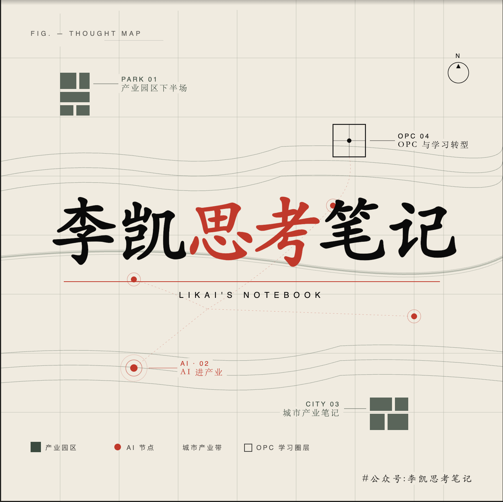

01

MAXNOTE / 02 PROJECT OFFICE
项目办公室工作台
把下一步放在看得见的位置
--
项目数据待刷新
优先推进
--
有明确时点或不可延后的事项
等待外部
--
等待客户、材料或内部反馈
待明确边界
--
合同、责任或关键条件待收口
暂停 / 归档
--
当前不占用推进资源
优先推进 读取最新每日复盘
项目组合 阶段、下一动作、关键卡点与时点
| 项目 | 当前阶段 | 下一动作 | 关键卡点 | 时点 | 入口 |
|---|
本周焦点 优先处理会改变项目走向的事项
项目流向 不同性质的事项，走不同的工作路径
机会判断
7
客户、角色、付费或交付条件尚未收口
项目推进
5
长期主线与已确认项目工作现场
对外交付
1
课程网站已发布，进入更新与转化运营
资料复用
1
GPJ 用于演讲、PPT 与内容转化
五条项目主线 每个项目只有一个正式入口
机会雷达 以机会卡为准
| 机会 | 当前阶段 | 最近更新 | 入口 |
|---|
项目指挥面板汇总最新复盘和待立项机会；项目状态与最终成品以对应正式文件为准。